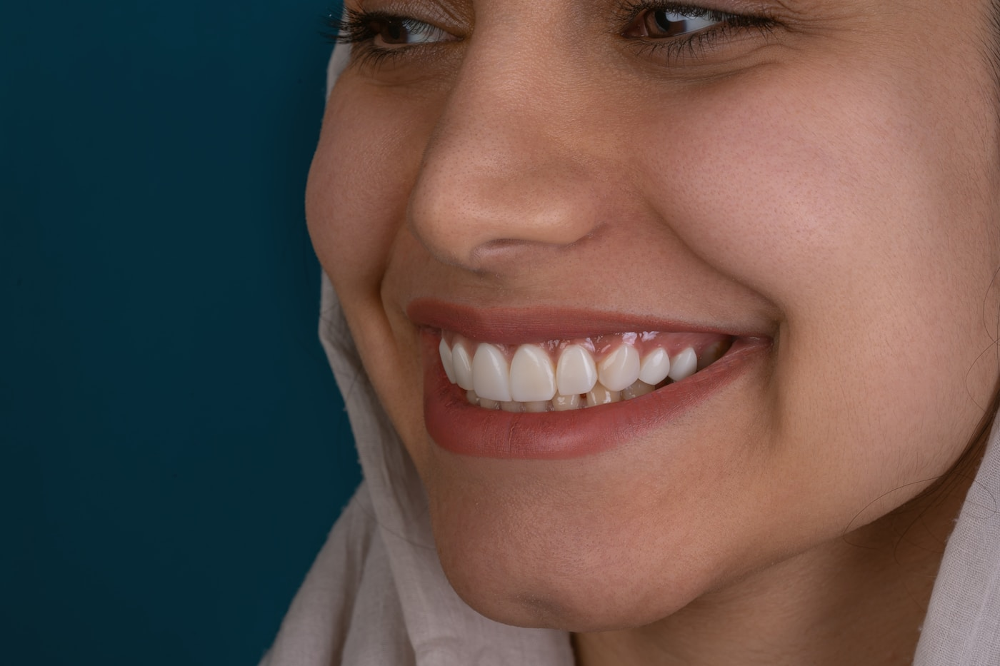
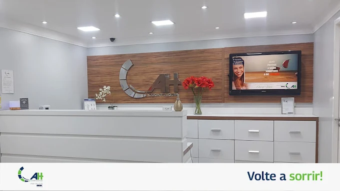
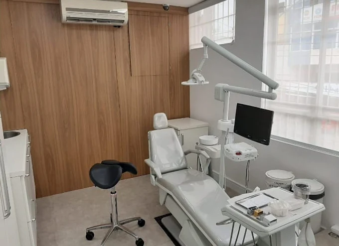
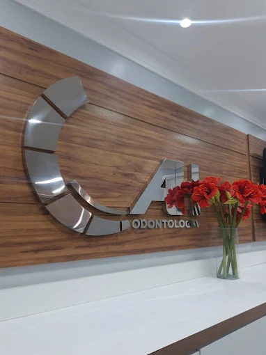
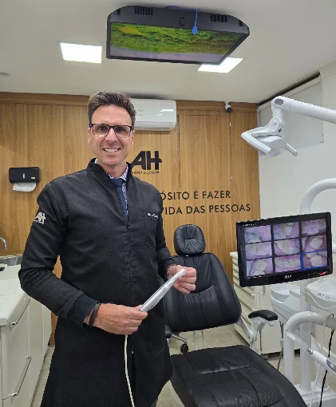

Seu sorriso
merece um
novo capítulo.
Volte a sorrir, conversar e aproveitar os pequenos momentos. Um cuidado próximo, com planejamento e respeito à sua história.

Imagem ilustrativa
Mais liberdade.
Mais motivos
para sorrir.
Perder dentes também pode mudar a forma de comer, falar e se relacionar. A reabilitação oral começa por entender o que faz falta na sua vida e planejar o cuidado para você.

Um espaço para receber você.AH Odontologia · Parque dos Camargos


Avenida Zélia, 893
Barueri, São Paulo
Prótese Protocolo.
Um cuidado que vai além da estética.
- 01
Estabilidade no dia a dia
Uma prótese fixa sobre implantes, com indicação avaliada de acordo com as suas necessidades.
- 02
Clareza antes de cada etapa
Avaliação e planejamento para você entender as possibilidades, os procedimentos e os cuidados.
- 03
Você não caminha sozinho
Acompanhamento próximo durante o tratamento e orientação para cuidar do seu sorriso depois dele.
Cada sorriso,
um cuidado.
Da prevenção à reabilitação oral, um olhar atento para o que você precisa.
Prótese Protocolo
EspecialidadeReabilitação de arcadas com prótese fixa sobre implantes e planejamento individual.
02Implantes dentários
Planejamento para a reposição de dentes, considerando função, saúde e estética.
03Estética do sorriso
Forma, proporção e harmonia, respeitando as características do seu sorriso.
04Ortodontia
Cuidado com o alinhamento dos dentes, acompanhado em cada fase do tratamento.
05Prevenção e limpeza
Acompanhamento regular para cuidar da saúde bucal e manter o seu sorriso.
06Odontologia digital
Recursos de imagem que auxiliam a avaliação e o planejamento do tratamento.

Dr. Alexandre
Herzog.
Implantodontia e reabilitação oral · CRO-SP 75762À frente da AH Odontologia, o Dr. Alexandre dedica sua atuação à reabilitação oral, com foco em Prótese Protocolo e formação continuada em implantodontia.
A consulta começa com escuta. Sua história, suas dúvidas e até o receio de sentar na cadeira fazem parte da conversa. O próximo passo é construído com você.
é preciso conhecer a pessoa.
O cuidado fica.
As histórias também.
Cada pessoa chega com uma história. Estas são algumas delas.
Cheguei morrendo de medo e saí planejando meu próximo sorriso. Nunca me senti tão respeitada em um consultório.
Depois de anos evitando o dentista por vergonha, encontrei uma equipe que me tratou sem nenhum julgamento.
A prótese protocolo mudou minha forma de comer, de falar e de me olhar no espelho. Foi um recomeço.
Vamos cuidar
do seu sorriso?
Fale com a nossa equipe. Tire suas dúvidas e encontre um horário para a sua avaliação.
Falar pelo WhatsAppAvenida Zélia, 893
Parque dos Camargos · Barueri, SP
CEP 06436-000
Segunda a sexta, das 8h às 18h